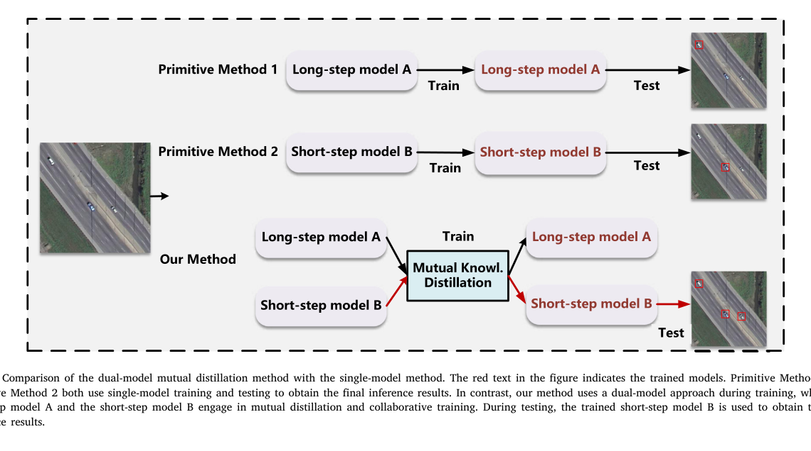
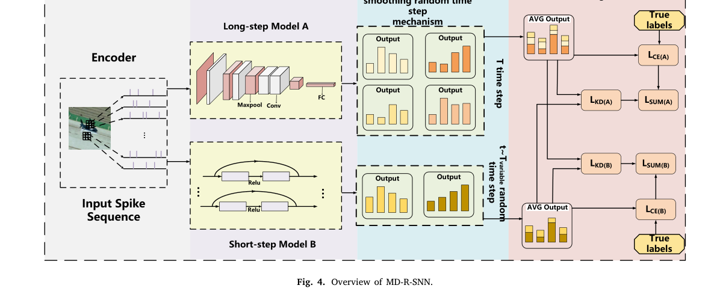

Paper Story · Neurocomputing · 2025
Mutual distillation for spiking remote sensing
Dual-model spiking neural network for remote sensing image classification using mutual knowledge distillation
Neurocomputing, 651, 130721 (2025)
Research question
Remote sensing classification needs low power and real-time inference, but SNNs often require longer timesteps for sufficient information representation.
Core method
The framework trains long-step and short-step SNNs collaboratively with mutual distillation, while a smooth random timestep mechanism gradually reduces the short-step model's timesteps.
Method steps
- Long-step SNN
Maintains richer temporal information.
- Short-step SNN
Targets low-latency inference.
- Mutual distillation
Shares knowledge and discriminative information during training.
- Smooth timestep
Gradually reduces short-model timesteps to avoid abrupt training loss.
Main finding
Low-latency SNNs should not be trained in isolation; short-step models can preserve information through knowledge transfer from long-step models.
Why it matters
Edge remote sensing requires energy, latency, and accuracy trade-offs. This training strategy maintains performance while reducing SNN timesteps.
Figures


Long-Short Time-Step Mutual Distillation
None · The framework illustrates bidirectional knowledge transfer between long-step and short-step SNN models.
The goal is to preserve discriminative knowledge while reducing inference time steps.
Source: Neurocomputing, 651, 130721 (2025). Figures from the author’s existing publication archive.
Figure reuse rights pending


Training Overview
None · The training diagram shows how the two models share supervision, feature constraints and prediction distributions.
The short-step model becomes an active co-learner instead of a passively compressed model.
Source: Neurocomputing, 651, 130721 (2025). Figures from the author’s existing publication archive.
Figure reuse rights pending
Scope and conditions
A case study in low-latency SNN training: reduce timestep dependency through training design, not only architecture.